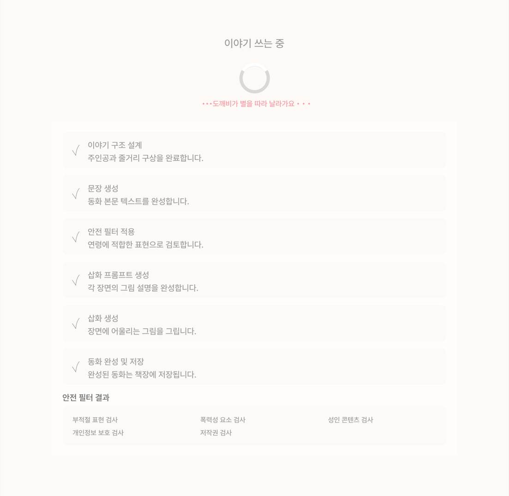

SStrengths강점
- AI 기반 개인화 동화 생성
- 감정 경험을 중심으로 한 차별화
- 반복적인 독서 경험 유도

상상이 이야기가 되는 곳
2~9세 아이와 부모를 위한 AI 맞춤 동화 제작 서비스
AI Personalized Story Platform for Kids & Parents
01Project Overview
토리동화는 2~9세 자녀를 둔 부모를 위한 AI 맞춤 동화 제작 서비스입니다. 동화 생성 후, 독후활동과 독서 기록까지 하나의 경험으로 이어지도록 설계했습니다.


07Service Concept
아이의 정보와 관심사를 바탕으로 이야기를 만들고,
감상과 독후활동, 부모의 기록까지 하나의 독서 경험으로 연결했습니다.
Core Experience
01
Input
이름 · 나이 · 주제 · 한국 소재 등
이야기에 필요한 정보를 선택합니다.
02
Create

입력한 정보를 바탕으로
이야기와 삽화를 생성합니다.
03
Read
완성된 동화를 읽거나 들으며
이야기에 몰입합니다.
04
Activity

읽은 이야기를 바탕으로 생각하고
표현하는 독후활동을 이어갑니다.
05
Record
읽은 동화와 활동 기록을
부모 Dashboard에서 확인합니다.
From input to record
12Reading Experience — Input & Create
선택형·대화형 입력으로 맞춤 동화 생성
 01Selectable
02Conversational
01Selectable
02Conversational
13Create UX Design
빠른 생성을 원하는 사용자와 이야기를 구체화하고 싶은 사용자를 고려해 입력 방식을 구분했습니다.
01Selectable Input
선택형 입력으로 간결하게주제와 소재 등 주요 조건을 선택해 빠르게 동화를 만들 수 있도록 구성했습니다.
02Conversational Input
대화형 입력으로 구체적으로사용자가 이야기의 주인공과 설정을 단계적으로 구체화할 수 있도록 설계했습니다.
03Flexible Creation
사용자 목적에 맞는 생성 흐름입력 방식은 다르지만 최종적으로 맞춤 동화 생성이라는 동일한 목적에 도달하도록 구성했습니다.
14Reading UX Design
읽기 화면의 정보와 기능 최적화
Design Principle
이야기에 집중할 수 있는
독서 화면 설계
삽화를 화면의 대부분으로 구성하고 본문은 연령별 최대 한도를 지정해 아이의 시선이 여러 정보로 분산되지 않도록 했습니다.
01Focus이야기에 집중
삽화를 화면의 70% 이상으로 구성하여 동화에 집중할 수 있도록 했습니다.
02Age Limit아이 맞춤 난이도
연령별 생성 기준에 따라 텍스트 분량과 표현 수준을 달리해 읽기 경험을 고려했습니다.
03Reading Modes상황에 맞는 독서 환경
전체 화면 및 취침 모드 등 독서 상황에 따른 화면 전환을 고려했습니다.
구현취침 모드(다크모드) · 듣기(TTS 재생) · 풀화면으로 보기(전체화면) ·
텍스트 편집(본문편집)
 01Illustration 70%+
02Lines Limit
03Reading Modes
01Illustration 70%+
02Lines Limit
03Reading Modes
15Beyond Reading — Activity
AI가 자동생성한 다양한 독후활동 놀이

 014 Activity Tabs
03Drag & Drop
014 Activity Tabs
03Drag & Drop
16Activity UX Design
동화의 내용과 아이의 연령을 고려해 질문과 활동 형식을 달리하고, 읽은 이야기를 직접 생각하고 표현하도록 구성했습니다.
01Reading to Activity
독서 이후의 자연스러운 연결동화 감상 이후 관련 독후활동으로 이어지는 흐름을 구성했습니다.
02Age-based Activity
연령별 참여 방식 구분어린 연령은 선택·말하기·그리기를 중심으로, 높은 연령은 이유 설명과 창의적 글쓰기를 중심으로 활동 조건을 구분했습니다.
03Interaction
직접 참여하는 활동 UI활동의 목적에 따라 선택, 입력, 그리기 등 적절한 조작 방식을 적용했습니다.
17Visual System — Record
생성·활동 데이터 시각적 구성
Design Principle
기록을 나열하는 대신,
아이의 변화를 한눈에 이해하도록
정보의 중요도와 성격에 따라 카드의 크기와 시각화 방식을 다르게 구성했습니다.
Primary현재 상태와 성장
01Child Profile
아이 프로필나이·관심사·최근 감정을 태그로 확인
02Vocabulary Growth
어휘 성장학습한 어휘 변화를 막대그래프로 비교
03Emotion Pattern
감정 패턴감정 분포를 버블 크기로 비교
Secondary활동 기록
04Reading History
독서 히스토리읽은 동화와 독서 시간을 목록으로 확인
05Activity Summary
독후활동 기록 요약활동 속 관심사와 학습 내용을 요약
1Profile
2Vocabulary
3Emotion
4History
5Activity
Primary · 어휘 성장
Primary · 프로필
Primary · 감정 패턴
Secondary · 독서 히스토리
Secondary · 활동 기록
Secondary · 동화 생성 히스토리
18Dashboard UX Design
부모가 아이의 성장 정보와 독서 활동을 구분해 확인할 수 있도록 정보의 중요도에 따라 화면 위계를 구성했습니다.
Primary Information
주요 성장 정보아이 프로필과 어휘 성장, 감정 패턴 등 주요 정보를 우선적으로 확인할 수 있도록 배치했습니다.
Secondary Information
독서 및 활동 기록독서 히스토리와 독후활동 기록은 주요 성장 정보를 보조하는 영역으로 구성했습니다.
19Design Refinement
AI 스토리와 삽화 생성에 시간이 소요되는 기술적 제약을 발견하고, 사용자가 생성 과정을 이해할 수 있도록 상태 피드백 방식을 개선했습니다.
Constraint기술적 제약
AI 스토리 및 삽화 생성에는 일정 시간이 필요하며, 즉각적인 결과 제공이 어렵습니다.
UX Problem사용자 경험 문제
정적인 로딩 화면만으로는 진행 중인 작업을 파악하기 어려워, 생성 과정에 불확실성을 느낄 수 있습니다.
Design Decision개선 방향
생성 과정을 단계별로 구분하고 완료·진행·대기 상태를 시각적으로 표현해 현재 작업을 이해할 수 있도록 설계했습니다.

Problem단일 로딩 상태만 제공하여 현재 진행 과정을 파악하기 어려움
1단계별 진행 상태 구분
2삽화 완성 과정 시각화
3안전 필터 확인 상태
Improvement단계별 진행 상태 · 삽화 완성 과정 · 안전 필터 확인 상태 안내
생성 시간을 직접 단축할 수 없는 상황에서, 사용자가 기다리는 과정을 이해할 수 있도록 시스템 상태의 가시성을 높였습니다.
* 단계 안내와 퍼센트 표시는 생성 흐름을 순서대로 보여주는 화면으로, 서버의 실시간 진행률과 연동된 수치는 아닙니다.